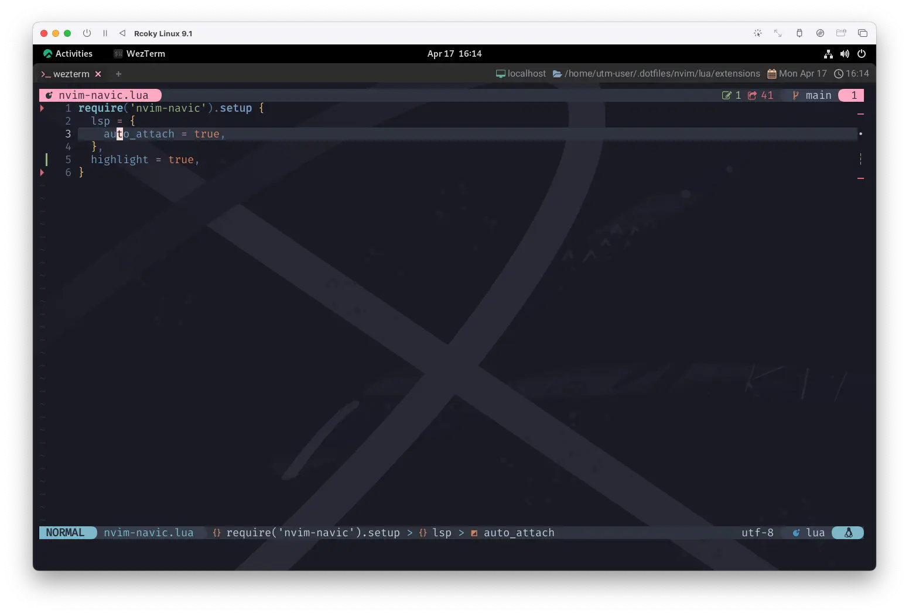
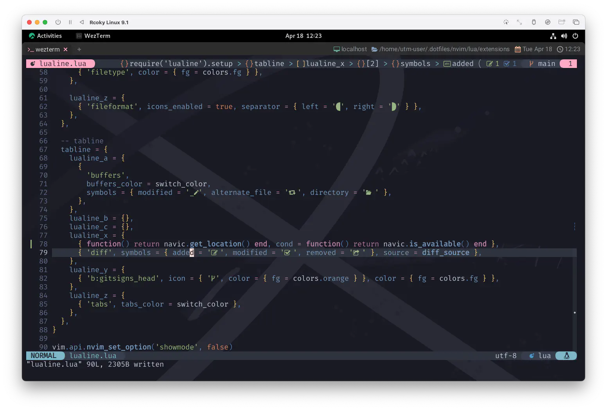

nvim-navic
今回はのほほんとnvim-navicを導入してみましょう。
これもLSPを利用して動作するプラグインです。
日本で衛星の話はまだだいぶお耳が痛いですが、インドのNavIC
1
はしっかり地球を飛び立った衛星です。
Before the rising sun, we fly
朝日が昇る前に、私たちは飛び立つ
Installation & Setup
nvim-navicの導入は、それはもうとても恐ろしく簡単です。インド人もびっくり❗
まあ、SmiteshP さんはインドの人なんだけど😮
もうこれだけで飛びます。ニホン人もびっくり❗
lsp
とのことなんですが、これはもはや過去のものとなっています...❗次項へ🐈
auto_attach
auto_attachの登場によって、
on_attachすらも、言語ごとにdocumentSymbolProviderに対応してますかぁ❓な〜んていう確認すらも
自分で書く必要がありません😊 のほほん。
これ以上に "auto" なものがかつて他に存在したでしょうか⁉️
highlight
highlightについては、これはなんとonenord.nvimが対応してくれています❗
Navic
ってことは、これもやっぱりコードを自分で書く必要がありません😆
使用しているカラーテーマがnvim-navicのhighlightに対応していない場合でも
Customise の "Example highlight definitions" で案内されているように、
自分で色をつけることができちゃいます😉
なんだかもう至れり尽くせりです🐹 のほほん。
Wrap Up
ということで、packerから呼び出します。
もう馴染みすぎてしまって、安堵感すら覚えますね😇
use {
'SmiteshP/nvim-navic',
config = function() require 'extensions.nvim-navic' end,
requires = 'neovim/nvim-lspconfig',
}
Usage
ネイティブに表示する方法なども示されていますが、
このサイトでは散々お世話になっているlualineを選んで進みます。
So many roads to choose
たくさんの道があるように たくさんの選択がある
lualine
ということでやっていくんですが、これもやっぱり簡単です😉 のほほん。
statusline のlualine_cに、diagnosticsと並べて表示してみます。
require('lualine').setup {
sections = {
(中略)
lualine_c = {
{
'diagnostics',
sources = { 'nvim_diagnostic', 'nvim_lsp' },
sections = { 'error', 'warn', 'info', 'hint' },
symbols = { error = ' ', warn = ' ', info = ' ', hint = ' ' },
},
+ { function() return navic.get_location() end, cond = function() return navic.is_available() end },
},
(以下略)
このページ、出来てからまだ一週間も経ってないんですが、上に書いてあることは既に過去のものとなりました🌟
- { function() return navic.get_location() end, cond = function() return navic.is_available() end },
+ { 'navic' }
どないなっとんねん🤯 強すぎるやろー🐎🐎🐎
必須ではありませんが、packerにもlualine.nvimがnvim-navicを使用していることを教えておいてあげましょう。
use {
'nvim-lualine/lualine.nvim',
config = function() require 'extensions.lualine' end,
after = 'onenord.nvim',
requires = {
'rmehri01/onenord.nvim', 'nvim-tree/nvim-web-devicons',
- 'neovim/nvim-lspconfig', 'lewis6991/gitsigns.nvim',
+ 'neovim/nvim-lspconfig', 'lewis6991/gitsigns.nvim', 'SmiteshP/nvim-navic',
},
}
そしたらほらね、lualine上に現在のコードコンテキストが示されました。

例えば、tablineに表示してみるのもオシャレです😊 VSCodeとかは上にあった気もするし❗

ちょっと上の情報が多すぎる気もするので、git関連の情報を下に移動した方が良いかもしれません🤔
(buffersもだいぶ場所とるし...😅)
We’ll start out walking and learn to run
And yes, we’ve just begun 2
歩くことから始めましょう そのあと走ることを学びましょう
そう わたしたちはまだ始まったばかり
Customise
これで終わっても全然いいんですけどね❗ もうちょっとのほほんとして行ってもバチは当たらないでしょ😊
他にもいくつかカスタマイズ項目があるので、わたしが使用しているものだけ載せていきます😄
icons
オフィシャルに示されているものをそのまま持ってきちゃいますが、
これをsetupに仕込んでおくとVSCode likeなアイコンになります。
これもやっぱりNerd Fontsなので、このサイトでは横幅 680px あればブラウザ上でも確認できます。
PCならブラウザのウィンドウを横に広げてみたり、タブレットなら横表示にしてみてね☺️
VSCode like:
Original:
...。😮
ちょっと例がびみょーですが、全体的にアイコンが大きく見えるし、Booleanのアイコンは確かに変わってますね。ね❗
depth_limit
あと、上限の鬼対策でこれも入れておくと安心です。
強いんだか弱いんだか「っていうか、なんやねんそれ🤨」ってなりますが、 こうしておけば百とか千とか、変なのとか来ても安心です❗
しかも9にしておけば十の悪魔にも強く出れます❗🤣
Line Count
サンプルだとgroupがありませんが、のほほんと入れとくのもありだと思います😄
I'll take you all.
のほほんとできましたね😊
ちゃんとLSPを動かせるようになったことによる賜物です。
「胸を張っていい❗❗
3
」
ところで〜...、nvim-navicのトップにこんな一文がありましたね。
nvim-navbuddyの存在はつい最近知ったので、
この章のロードマップには無かったし、わたし自身が超使いこなせているってこともないんですが...😟
なんか面白かったので、このサイトでもちょこっとだけ触れたいと思います😆
そんなこんなで次回に続く... 🪼
Sharing horizons that are new to us
Watching the signs along the way
わたしたちにとって新たな地平線へ一緒に
道中の標識にも目を向けて
1: 当初、インド地域航法衛星システム(Indian Regional Navigation Satellite System/IRNSS)と呼称されていたが、 2016年4月にモディ首相によって名称変更が行われ，「NavIC」（Navigation Indian Constellation）と呼ばれることになった。 Wikipediaより
2: We've Only Just Begun (by The Carpenters) 元々は、California 州の Crocker National Bank のCMソングとして制作され、 タイトルのとおり「2人はまだ始まったばかり（We've Only Just Begun）」と結婚によって新しい人生を踏み出すことについて歌われている。 この曲は、アレンジャーとしての Richard の能力と、ボーカルとしての Karen の能力が最も発揮されているということで、 Richard は「Carpenters の代表曲を挙げるなら『We've Only Just Begun』だな」と語っている。 Wikipediaより
3: ドッジボールは続いている...❗